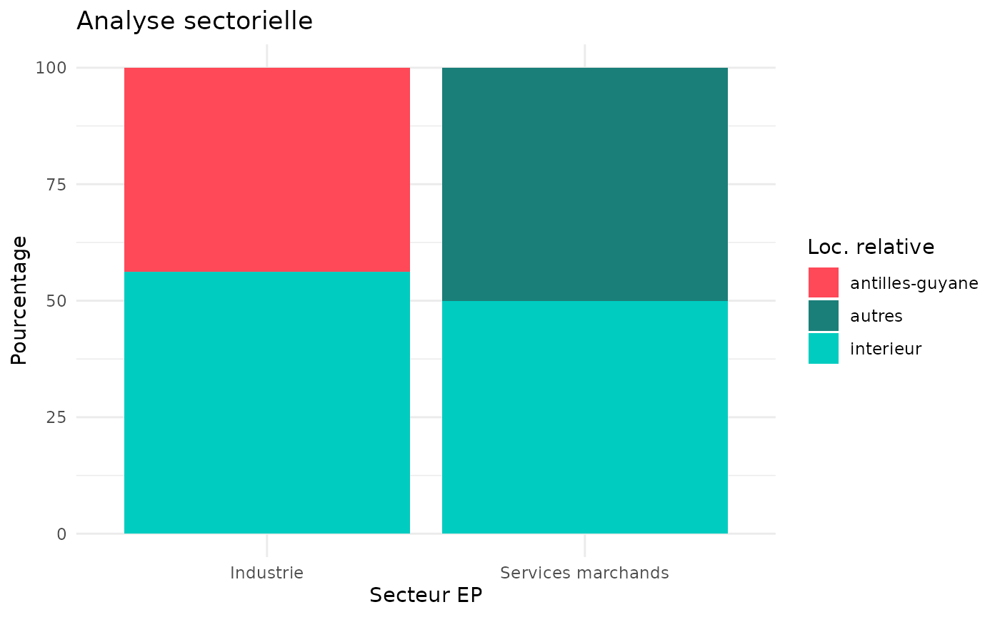

Utilisation de BoutadE avec plusieurs études
Exemple_complet_utilisation.Rmd
library(BoutadE)## Warning: replacing previous import 'data.table::first' by 'dplyr::first' when
## loading 'BoutadE'## Warning: replacing previous import 'data.table::last' by 'dplyr::last' when
## loading 'BoutadE'## Warning: replacing previous import 'data.table::between' by 'dplyr::between'
## when loading 'BoutadE'##
## Attaching package: 'dplyr'## The following objects are masked from 'package:stats':
##
## filter, lag## The following objects are masked from 'package:base':
##
## intersect, setdiff, setequal, union
#devtools::install_github("clement2323/ollamax")
#{library(ollamax) #??ollamax
library(pbapply)
library(data.table)##
## Attaching package: 'data.table'## The following objects are masked from 'package:dplyr':
##
## between, first, last
#Sys.setenv(no_proxy = "")
#Sys.setenv(https_proxy ="http://proxy-rie.http.insee.fr:8080")
#Sys.setenv(http_proxy ="http://proxy-rie.http.insee.fr:8080")
# voir toutes les tables jouets disponibles
data(package = "BoutadE")
data("metadonnees_etude") # metadonnee d'une etude
str(metadonnees_etude) # Que pour parler ollama (YODA)## List of 2
## $ nom : chr "Analyse EP-FI Antilles-Guyane"
## $ description: chr "Étude des relations entre entreprises profilées et leurs filiales dans les Antilles-Guyane"
data("metadonnees_tables") # metadonnee d'une etude
metadonnees_tables %>% head(10) # tu en as besoin## nom_etude nom_table nom_variable
## 1 Analyse EP-FI Antilles-Guyane EP_FI_AG annee
## 2 Analyse EP-FI Antilles-Guyane EP_FI_AG siren_EP
## 3 Analyse EP-FI Antilles-Guyane EP_FI_AG denom_EP
## 4 Analyse EP-FI Antilles-Guyane EP_FI_AG dep_EP
## 5 Analyse EP-FI Antilles-Guyane EP_FI_AG s4_EP
## 6 Analyse EP-FI Antilles-Guyane EP_FI_AG redi_r310_EP
## 7 Analyse EP-FI Antilles-Guyane EP_FI_AG siren_FI
## 8 Analyse EP-FI Antilles-Guyane EP_FI_AG denom_FI
## 9 Analyse EP-FI Antilles-Guyane EP_FI_AG dep_FI
## 10 Analyse EP-FI Antilles-Guyane EP_FI_AG s4_FI
## libelle libelle_court
## 1 Année de référence Année
## 2 Numéro SIREN de l'entreprise profilée SIREN EP
## 3 Dénomination de l'entreprise profilée Nom EP
## 4 Département de l'entreprise profilée Dép. EP
## 5 Secteur d'activité de l'entreprise profilée Secteur EP
## 6 Chiffre d'affaires de l'entreprise profilée CA EP
## 7 Identifiant de la filiale ID FI
## 8 Dénomination de la filiale Nom FI
## 9 Département de la filiale Dép. FI
## 10 Secteur d'activité de la filiale Secteur FI
## description
## 1 Année des données (2022 ou 2023)
## 2 Identifiant unique à 9 chiffres de l'entreprise profilée
## 3 Raison sociale de l'entreprise profilée
## 4 Code département de l'entreprise profilée (971, 972, etc.)
## 5 Secteur d'activité en 4 postes (Industrie, Services marchands, etc.)
## 6 Montant du chiffre d'affaires de l'entreprise profilée
## 7 Identifiant unique de la filiale
## 8 Raison sociale de la filiale
## 9 Code département de la filiale (971, 972, 973, 974)
## 10 Secteur d'activité en 4 postes (Industrie, Construction, Commerces, Services marchands)## annee siren_EP denom_EP dep_EP s4_EP redi_r310_EP siren_FI
## 1 2022 123456789 Entreprise A 971 Industrie 4184 FI1
## 2 2022 987654321 Entreprise B 972 Services marchands 1880 FI2
## 3 2022 123456789 Entreprise A 971 Industrie 3873 FI3
## 4 2022 987654321 Entreprise B 972 Services marchands 2107 FI4
## 5 2022 123456789 Entreprise A 971 Industrie 4866 FI5
## denom_FI dep_FI s4_FI redi_r310_FI poids dep_FI_relatif
## 1 Filiale 1 971 Industrie 1366 1 interieur
## 2 Filiale 2 972 Construction 1813 1 interieur
## 3 Filiale 3 973 Commerces 609 1 antilles-guyane
## 4 Filiale 4 974 Services marchands 1857 1 autres
## 5 Filiale 5 971 Industrie 574 1 interieurEcriture sur excel
metadonnees_tables## nom_etude nom_table nom_variable
## 1 Analyse EP-FI Antilles-Guyane EP_FI_AG annee
## 2 Analyse EP-FI Antilles-Guyane EP_FI_AG siren_EP
## 3 Analyse EP-FI Antilles-Guyane EP_FI_AG denom_EP
## 4 Analyse EP-FI Antilles-Guyane EP_FI_AG dep_EP
## 5 Analyse EP-FI Antilles-Guyane EP_FI_AG s4_EP
## 6 Analyse EP-FI Antilles-Guyane EP_FI_AG redi_r310_EP
## 7 Analyse EP-FI Antilles-Guyane EP_FI_AG siren_FI
## 8 Analyse EP-FI Antilles-Guyane EP_FI_AG denom_FI
## 9 Analyse EP-FI Antilles-Guyane EP_FI_AG dep_FI
## 10 Analyse EP-FI Antilles-Guyane EP_FI_AG s4_FI
## 11 Analyse EP-FI Antilles-Guyane EP_FI_AG redi_r310_FI
## 12 Analyse EP-FI Antilles-Guyane EP_FI_AG poids
## 13 Analyse EP-FI Antilles-Guyane EP_FI_AG dep_FI_relatif
## libelle libelle_court
## 1 Année de référence Année
## 2 Numéro SIREN de l'entreprise profilée SIREN EP
## 3 Dénomination de l'entreprise profilée Nom EP
## 4 Département de l'entreprise profilée Dép. EP
## 5 Secteur d'activité de l'entreprise profilée Secteur EP
## 6 Chiffre d'affaires de l'entreprise profilée CA EP
## 7 Identifiant de la filiale ID FI
## 8 Dénomination de la filiale Nom FI
## 9 Département de la filiale Dép. FI
## 10 Secteur d'activité de la filiale Secteur FI
## 11 Chiffre d'affaires de la filiale CA FI
## 12 Poids de l'observation Poids
## 13 Localisation relative de la filiale Loc. relative
## description
## 1 Année des données (2022 ou 2023)
## 2 Identifiant unique à 9 chiffres de l'entreprise profilée
## 3 Raison sociale de l'entreprise profilée
## 4 Code département de l'entreprise profilée (971, 972, etc.)
## 5 Secteur d'activité en 4 postes (Industrie, Services marchands, etc.)
## 6 Montant du chiffre d'affaires de l'entreprise profilée
## 7 Identifiant unique de la filiale
## 8 Raison sociale de la filiale
## 9 Code département de la filiale (971, 972, 973, 974)
## 10 Secteur d'activité en 4 postes (Industrie, Construction, Commerces, Services marchands)
## 11 Montant du chiffre d'affaires de la filiale
## 12 Coefficient de pondération de l'observation (1 par défaut)
## 13 Position géographique de la filiale par rapport à son EP (interieur, antilles-guyane, autres)
table_demandes <- table_demandes_valides
erreurs <- controler_demandes(table_demandes)
if(nrow(erreurs)!=0) stop("il ya des erreurs dans les demandes")
# metadonnees_tables <- NULL
# gestion excel ok <-
for (i in 1:nrow(table_demandes)){
print(i)
ecrire_demande_sur_xls(table_demandes[i,],metadonnees_tables)
}## [1] 1
## [1] 2
## [1] 3
## [1] 4
## [1] 5
## [1] 6
## [1] 7
## [1] 8
## [1] 9
## [1] 10
## [1] 11
## [1] 12
## [1] 13
## [1] 14
## [1] 15
## [1] 16
## [1] 17
## [1] 18
## [1] 19
## [1] 20
ecrire_etude## function (nom_etude, ollama = FALSE, model_name = "mistral-small",
## role = NULL)
## {
## return_filename <- function(dir, nom_etude) {
## paste0(dir, "/", grep(nom_etude, list.files(dir), value = TRUE))
## }
## source(return_filename("codes", nom_etude), encoding = "UTF-8")
## table_demandes <- read.csv(return_filename("metadonnees/demandes",
## nom_etude), encoding = "UTF-8")
## metadonnees_tables <- read.csv(return_filename("metadonnees/metadonnees_tables",
## nom_etude), encoding = "UTF-8")
## metadonnees_etude <- fromJSON(return_filename("metadonnees/metadonnees_etudes",
## nom_etude))
## if (ollama)
## metadonnees_role <- fromJSON(paste0("metadonnees/roles/role_",
## role, ".json"))
## liste_info_chunk <- pblapply(1:nrow(table_demandes), function(i) {
## if (ollama) {
## generer_figure_from_demande(table_demandes[i, ],
## metadonnees_tables, ollama = TRUE, fonction_ask = function(prompt) ask_ollama(prompt,
## model_name), metadonnees_role = metadonnees_role,
## metadonnees_etude = metadonnees_etude)
## }
## else {
## generer_figure_from_demande(table_demandes[i, ],
## metadonnees_tables)
## }
## })
## nom_rapport <- paste0("rapport_automatique_", nom_etude,
## "_", role, ".Rmd")
## generer_markdown_auto_simple(liste_info_chunk, nom_rapport = nom_rapport)
## rmarkdown::render(input = paste0("output/", nom_rapport),
## envir = environment())
## }
## <bytecode: 0x564c56386ab8>
## <environment: namespace:BoutadE>
# gestion excel ok <-
for (i in 1:nrow(table_demandes)){
print(i)
ecrire_demande_sur_xls(table_demandes[i,],metadonnees_tables)
}## [1] 1
## [1] 2
## [1] 3
## [1] 4
## [1] 5
## [1] 6
## [1] 7
## [1] 8
## [1] 9
## [1] 10
## [1] 11
## [1] 12
## [1] 13
## [1] 14
## [1] 15
## [1] 16
## [1] 17
## [1] 18
## [1] 19
## [1] 20
liste_info_chunk <- pblapply(1:nrow(table_demandes_rmd), function(i){ generer_figure_from_demande(table_demandes_rmd[i,],metadonnees_tables)
}
)
# etude d'un element
element <- liste_info_chunk[[2]]
figure <- element$figure
figure
nom_rapport <- "rapport.rmd"
# genere le .rmd rapport
generer_markdown_auto_simple(liste_info_chunk, nom_rapport = nom_rapport)
#rmarkdown::render(input = paste0("output/", nom_rapport),envir = environment())
table_demandes_rmd## id_demande table condition var_croisement var_croisement_relative
## 1 1 EP_FI_AG annee-dep_EP dep_FI_relatif
## 2 2 EP_FI_AG s4_EP dep_FI_relatif
## 3 3 EP_FI_AG dep_EP dep_FI_relatif
## 4 4 EP_FI_AG s4_EP dep_FI_relatif
## 5 5 EP_FI_AG dep_EP-dep_FI dep_FI_relatif
## 6 6 EP_FI_AG s4_EP-s4_FI dep_FI_relatif
## 7 7 EP_FI_AG dep_EP dep_FI_relatif
## 8 8 EP_FI_AG s4_EP-dep_EP dep_FI_relatif
## 9 9 EP_FI_AG dep_EP dep_FI_relatif
## 10 10 EP_FI_AG s4_EP dep_FI_relatif
## 11 11 EP_FI_AG dep_EP-s4_FI dep_FI_relatif
## 12 12 EP_FI_AG s4_EP dep_FI_relatif
## 13 13 EP_FI_AG dep_EP-s4_EP dep_FI_relatif
## 14 14 EP_FI_AG s4_EP-dep_FI dep_FI_relatif
## 15 15 EP_FI_AG dep_EP dep_FI_relatif
## 16 16 EP_FI_AG s4_EP-s4_FI dep_FI_relatif
## 17 17 EP_FI_AG dep_EP-dep_FI dep_FI_relatif
## 18 18 EP_FI_AG s4_EP dep_FI_relatif
## 19 19 EP_FI_AG dep_EP dep_FI_relatif
## 20 20 EP_FI_AG annee-s4_EP
## var_evolution var_quanti unite fonctions_agregations
## 1 annee redi_r310_EP millier sum
## 2 redi_r310_EP-redi_r310_FI millier-unite sum-mean
## 3 redi_r310_EP millier sum
## 4 redi_r310_FI unite sum
## 5 redi_r310_EP millier sum
## 6 redi_r310_EP-redi_r310_FI unite-millier mean-sum
## 7 redi_r310_EP millier sum
## 8 redi_r310_FI millier sum
## 9 redi_r310_EP millier sum
## 10 redi_r310_FI millier sum
## 11 redi_r310_EP-redi_r310_FI unite-millier mean-sum
## 12 redi_r310_EP millier sum
## 13 redi_r310_FI millier sum
## 14 redi_r310_EP millier sum
## 15 redi_r310_FI unite sum
## 16 redi_r310_EP-redi_r310_FI unite-millier mean-sum
## 17 redi_r310_EP millier sum
## 18 redi_r310_FI unite sum
## 19 redi_r310_EP millier sum
## 20 redi_r310_EP-redi_r310_FI unite-millier mean-max
## titre partie
## 1 Analyse multi-indicateurs Etudes des filiales antillaises
## 2 Analyse sectorielle Etudes des filiales antillaises
## 3 Analyse départementale Etudes des filiales antillaises
## 4 Analyse comparative Etudes des filiales antillaises
## 5 Analyse statistique Etudes des filiales antillaises
## 6 Analyse géographique Etudes des filiales antillaises
## 7 Analyse temporelle Etudes des filiales antillaises
## 8 Analyse structurelle Etudes des filiales antillaises
## 9 Analyse détaillée Etudes des filiales antillaises
## 10 Analyse globale Etudes des filiales antillaises
## 11 Analyse spécifique etude des détentions des entreprises antillaises
## 12 Analyse agrégée etude des détentions des entreprises antillaises
## 13 Analyse ventilée etude des détentions des entreprises antillaises
## 14 Analyse croisée etude des détentions des entreprises antillaises
## 15 Analyse synthétique etude des détentions des entreprises antillaises
## 16 Analyse approfondie etude des détentions des entreprises antillaises
## 17 Analyse thématique etude des détentions des entreprises antillaises
## 18 Analyse consolidée etude des détentions des entreprises antillaises
## 19 Analyse segmentée etude des détentions des entreprises antillaises
## 20 Analyse stratégique etude des détentions des entreprises antillaises
## sous_partie type_figure
## 1 le chiffre d' affaire kable
## 2 le chiffre d' affaire graphique
## 3 le chiffre d' affaire kable
## 4 le chiffre d' affaire graphique
## 5 le chiffre d' affaire kable
## 6 le chiffre d' affaire graphique
## 7 le chiffre d' affaire kable
## 8 le chiffre d' affaire graphique
## 9 le chiffre d' affaire kable
## 10 le chiffre d' affaire graphique
## 11 en nombre d'entreprise kable
## 12 en nombre d'entreprise graphique
## 13 en nombre d'entreprise kable
## 14 en nombre d'entreprise graphique
## 15 en nombre d'entreprise kable
## 16 en nombre d'entreprise graphique
## 17 en nombre d'entreprise kable
## 18 en nombre d'entreprise graphique
## 19 en nombre d'entreprise kable
## 20 en nombre d'entreprise kable
# gestion excel ok <-
liste_tables_params <- lapply(1:nrow(table_demandes), function(i)renvoyer_table_from_demande(table_demandes[i,]))
liste_tables <- lapply(liste_tables_params,function(table_param) table_param$table)
liste_tables[[2]] ## # A tibble: 4 × 6
## s4_EP dep_FI_relatif `redi_r310_EP-sum` `redi_r310_EP-tot` `redi_r310_EP-part`
## <chr> <chr> <dbl> <dbl> <dbl>
## 1 Indu… antilles-guya… 39 90 43.8
## 2 Indu… interieur 50 90 56.2
## 3 Serv… autres 41 83 50
## 4 Serv… interieur 41 83 50
## # ℹ 1 more variable: `redi_r310_FI-mean` <dbl>
liste_tables[[3]] ## # A tibble: 4 × 5
## dep_EP dep_FI_relatif `redi_r310_EP-sum` `redi_r310_EP-tot`
## <chr> <chr> <dbl> <dbl>
## 1 971 antilles-guyane 39 90
## 2 971 interieur 50 90
## 3 972 autres 41 83
## 4 972 interieur 41 83
## # ℹ 1 more variable: `redi_r310_EP-part` <dbl>
liste_tables[[14]] ## # A tibble: 4 × 6
## s4_EP dep_FI dep_FI_relatif `redi_r310_EP-sum` `redi_r310_EP-tot`
## <chr> <chr> <chr> <dbl> <dbl>
## 1 Industrie 971 interieur 50 50
## 2 Industrie 973 antilles-guya… 39 39
## 3 Services marchands 972 interieur 41 41
## 4 Services marchands 974 autres 41 41
## # ℹ 1 more variable: `redi_r310_EP-part` <dbl>